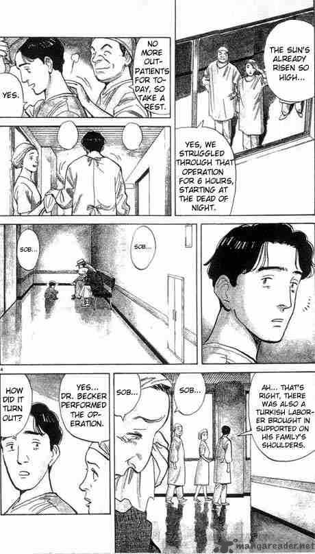

Monster
by Naoki Urasawa
Synopsis
Dr. Kenzo Tenma is a brilliant Japanese neurosurgeon working in Germany whose life changes after he chooses to save the life of a young boy named Johan Liebert instead of a politically influential patient. Years later, Tenma discovers that Johan has grown into a terrifying serial killer. Haunted by his decision, Tenma sets out to stop Johan and uncover the dark secrets behind the boy's past, leading him into a disturbing investigation of human nature, morality, and evil.
Chapter 1

Dr. Kenzo Tenma, a gifted neurosurgeon working at a hospital in Düsseldorf, faces a difficult moral choice when two critically ill patients arrive. Despite pressure from hospital leadership, he decides to operate on a young boy named Johan Liebert rather than a prominent political figure.
Tenma believes he has made the right decision by saving a child's life. However, the consequences of that choice unfold years later, when a string of disturbing murders reveals that the boy he saved may be connected to something far more sinister than he ever imagined.
— End of chapter —